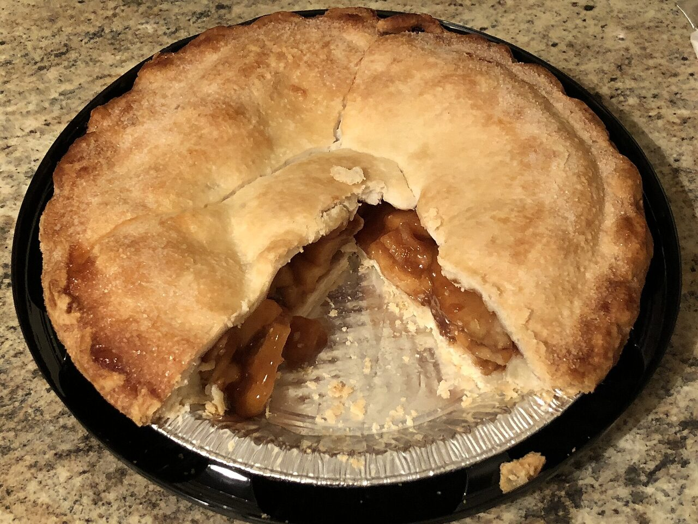
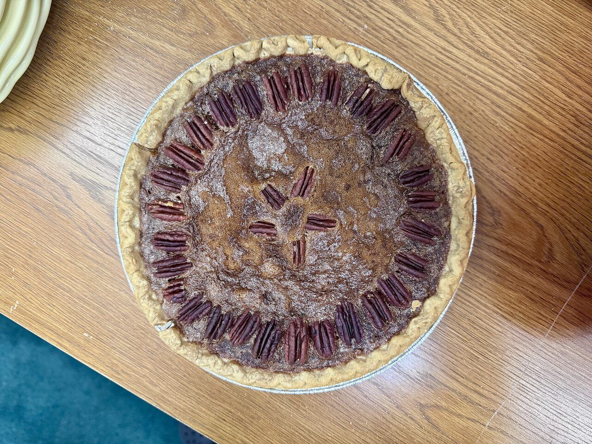
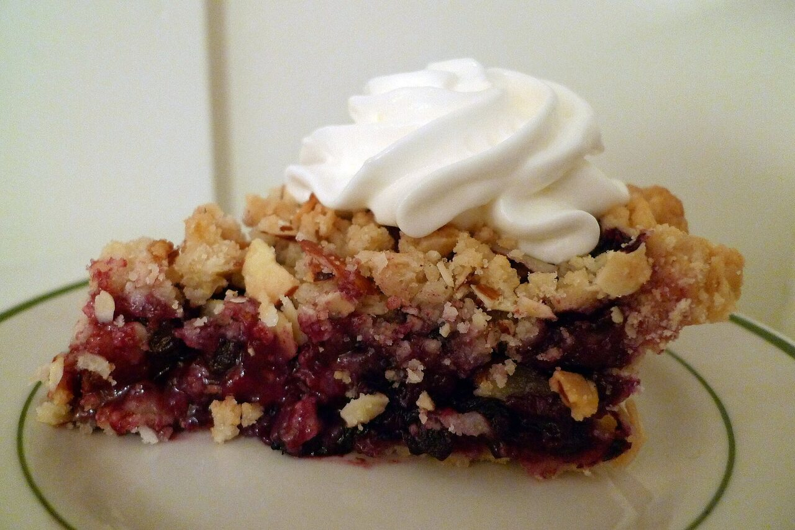

Delicious American-style gourmet pies for all your family celebrations, Shabbat and Chagim - in a wide variety of flavors and sizes, made with strictly kosher ingredients of the highest quality.



Shabbat, Chagim, bar mitzvahs, birthdays, weddings, Thanksgiving - or Mishloach Manos that stand out.
Made with strictly kosher ingredients of the highest quality, in flavors and sizes to suit any table.
Dairy-free, vegan and gluten-free options available - nobody at your simcha gets left out.
Pickup in Baka, Jerusalem, or delivery within Jerusalem for an additional fee.